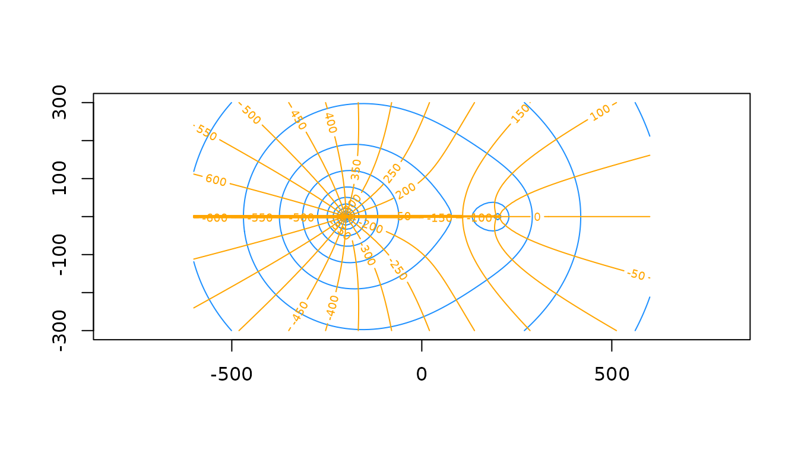

The raem package provides a set of R functions to create
an analytic element model of steady-state, single layer groundwater flow
under the Dupuit-Forchheimer assumption. This vignette gives a short
overview of the theory and basics behind analytic element modeling and
how the raem package implements this in R.
Introduction to analytic element modeling
First developed by Otto Strack and Henk Haitjema in the late 1970’s, the analytic element modeling (AEM) approach solves a groundwater flow problem by superposition of analytical solutions for features such as wells, streams and recharge. Each feature is called an element. By superimposing the individual solutions, the combined effect of all elements can be calculated at any point in space. An arbitrary number of elements can be placed at any location in the flow field. As such, the AEM method is more flexible than single analytical solutions and can be used to solve more complex field cases. Compared to numerical solutions of the groundwater flow problem, the AEM method does not require a spatial grid, is relatively fast and easy to use and does not suffer from numerical instability or mass balance errors.
Flow is governed by the Dupuit-Forchheimer approximation which states that the hydraulic head \(h\) is hydrostatic at each point in the horizontal plane. In other words, there is no variation in \(h\) along the vertical axis and horizontal flow is evenly distributed along the vertical axis. This reduces the dimensions of the problem, as the solution now only depends on the \(x\) and \(y\) coordinates. Although there are no vertical gradients, vertical flow can still be computed from mass balance considerations, i.e. areal recharge at the aquifer top or leakage through the aquifer bottom. Additionally for phreatic aquifers, the curvature of the water-table induces vertical flow components. Besides the Dupuit-Forchheimer assumption, the aquifer is assumed be of infinite lateral extent, have a horizontal top and base and is homogeneous at the scale of interest. In practice, these assumptions appear to be (approximately) valid for cases when the groundwater system under consideration is much wider than it is thick, which is the case for most regional aquifer systems where flow is predominantly horizontal. In areas where there is considerable vertical flow, such as near groundwater divides or near partially penetrating wells or streams, or when the flow system has a similar thickness and width (\(width\lt~\approx 3*thickness\)), the Dupuit-Forchheimer approximation is not valid and a different method should be used, e.g. a numerical model of the 3D groundwater flow equation.
Solution method
For steady-state, single layer Dupuit-Forchheimer flow in the horizontal plane, the governing equation is:
\[ T\frac{\partial^2{h}}{\partial x^2} + T\frac{\partial^2{h}}{\partial y^2} + N = 0 \]
with \(T\) the aquifer transmissivity \([L^2/T]\), equal to \(kH\) with \(k\) the horizontal hydraulic conductivity \([L/T]\) and \(H\) the saturated thickness \([L]\), \(h\) the hydraulic head \([L]\) and \(N\) a sink/source term \([L/T]\).
When the aquifer is phreatic, the saturated thickness \(H\) is variable, which renders the flow equation non-linear when solving for \(h\). Therefore, the discharge potential \(\Phi\) \([L^3/T]\) is introduced so that the governing flow equation becomes:
\[ \frac{\partial^2{\Phi}}{\partial x^2} + \frac{\partial^2{\Phi}}{\partial y^2} + N = 0 \]
which is a linear equation and can be solved for \(\Phi\). The resulting hydraulic heads can then be computed from:
\[ \begin{aligned} \Phi &= kHh - (\frac{1}{2}kH^2 + kHz_b) &\qquad h \ge z_t \\ \Phi &= \frac{1}{2}k(h - z_b)^2 &\qquad z_b \lt h \lt z_t \end{aligned} \]
with \(z_t\) and \(z_b\) the aquifer top and base elevation \([L]\), respectively.
In addition to the discharge potential \(\Phi\), there exists a stream function \(\Psi\) \([L^3/T]\) which is defined as a function that is constant along streamlines and whose difference in stream function values between two points is equal to the amount of water flowing between those two points. By convention, the stream function increases to the right when looking in the direction of flow. It can be used to visualize the amount of flow in a groundwater system. \(\Psi\) is only defined for the Laplace equation, i.e. when \(N\) is zero. In modeling terms, this means that no area-sinks are active in the model (see paragraph Area-sink below).
The discharge potential \(\Phi\) and the stream function \(\Psi\) fulfill the Cauchy-Riemann conditions and can therefore be combined into a complex potential \(\Omega\) whose real and imaginary terms are \(\Phi\) and \(\Psi\), respectively. By solving the flow problem in terms of \(\Omega\), \(\Phi\) and \(\Psi\) are solved simultaneously in the complex plane, which is described by the complex coordinate \(\zeta=x+iy\). The solution in terms of \(\Omega\) yields \(\Phi\) and eventually \(h\).
The derivative of \(\Omega\) with respect to \(\zeta\) is the complex discharge \(W\), whose real component is \(Q_x\) and whose negative imaginary component is \(Q_y\), i.e. the \(x\) and \(y\) components of the discharge vector \(Q\) \([L^2/T]\), which represents the first derivate of \(\Phi\) in the \(x\) and \(y\) directions. The vertical component \(Q_z\) is determined from mass balance considerations as discussed above. The Darcy flux \(q\) \([L/T]\) (also called specific discharge) is computed as \(Q/H\). The average linear flow velocity \(v\) \([L/T]\) is computed as \(q/n\) with \(n\) the aquifer porosity, which should represent the effective porosity.
Each element gives a solution for the governing flow equation in terms of \(\Omega\), as well as for the complex discharge \(W\). An element has one or more free parameters, e.g. the discharge for a well element. These parameters may be user-specified or need to be computed from other conditions, as is the case in head-specified elements. The parameters are specified at so called collocation points or control points. Since the solution for a given element depends on the results of all other elements, the complete system of equations needs to be solved simultaneously for the element parameters. This is done by setting up the flow equations at the collocation points in a matrix form of \(Ax=b\), which is then solved for the parameter vector \(x\). Once the element parameters are known, the contributions of each element to the complex potential \(\Omega\) and the complex discharge \(W\) at any point can be calculated and superimposed to form the resulting \(\Omega\) and \(W\) values, which then yield the variables of interest such as \(h\) and \(Q\).
For a more complete overview of analytic element modeling, the reader is referred to Haitjema (1995), Strack (1989), Strack (2003) and Hunt (2006).
Elements
An overview of the elements available in raem is
provided. You can specify as many elements as you like, but keep in mind
that the solution matrix increases in size for every element parameter.
Currently, every element in raem only supplied one
parameter to the solution matrix.
To create an AEM model with raem, first we need load
raem and specify the aquifer parameters:
library(raem)
k = 10 # hydraulic conductivity, m/d
top = 10 # aquifer top elevation, m
base = -15 # aquifer bottom elevation, m
n = 0.2 # aquifer effective porosity, -Well
The simplest element is a well with a specified discharge \(Q\), which can be created with the
well() function. It requires the \(x\) and \(y\) coordinate of the well and the pumping
rate \(Q\) (positive for withdrawal).
The well radius \(rw\) can also be
specified (default is \(0.3\) length
units). Inside the well annulus as defined by \(r_w\), the solution is undefined. When a
output variable is requested inside this circle, its location is
projected onto the nearest point on the outer annulus.
Here, we specify two extraions wells. We then create the model with a
call to aem(). This function needs the aquifer parameters
as well as the elements. You can supply the elements individually or put
them into a single list(). The aem() function
automatically solves the system of equations by calling
solve.aem(). Not that by default, the flow system has a
variable saturated thickness. You can change this by setting
type = 'confined' to force the model to use a constant
saturated thickness, set equal to the aquifer thickness. This may be
useful when you want to force the system of equations to remain linear
when elements with a hydraulic resistance are supplied (see below).
Finally, we set-up the contouring grid and plot the head contours in
blue and the streamlines in orange using contours(). Note
the ugly branch cuts (in AEM jargon) of the streamlines
extending from the well centers towards the negative x-axis, which is an
artifact of contouring the stream function.
w1 = well(x = 200, y = 0, Q = 300)
w2 = well(x = -200, y = 0, Q = 1000)
# create the model. This automatically solves the system of equations
m = aem(k = k, top = top, base = base, n = n, w1, w2)
# set-up the contouring grid and plot head contours and streamline
xg = seq(-600, 600, length = 100)
yg = seq(-300, 300, length = 100)
contours(m, xg, yg, col = 'dodgerblue', nlevels = 20, drawlabels = FALSE)
contours(m, xg, yg, variable = 'streamfunction', col = 'orange', nlevels = 20, drawlabels = TRUE, add = TRUE)